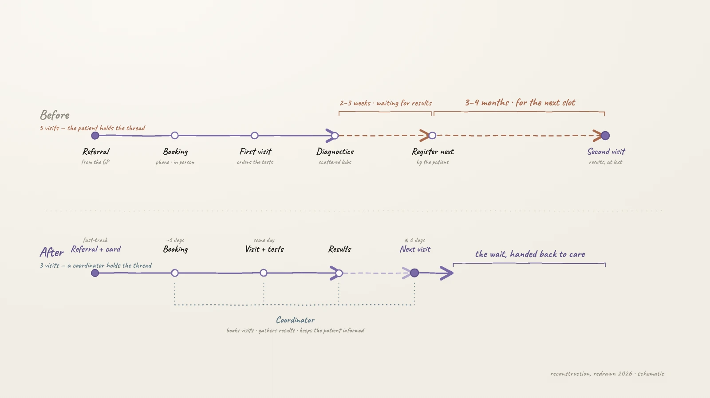
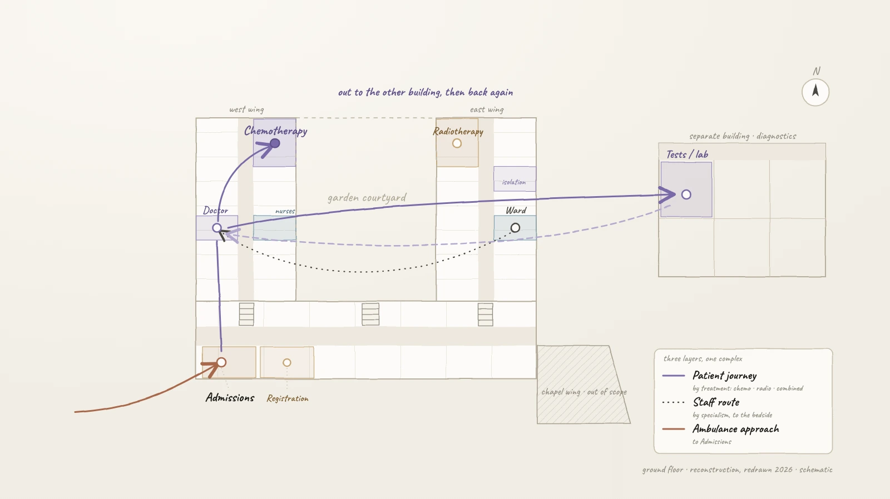
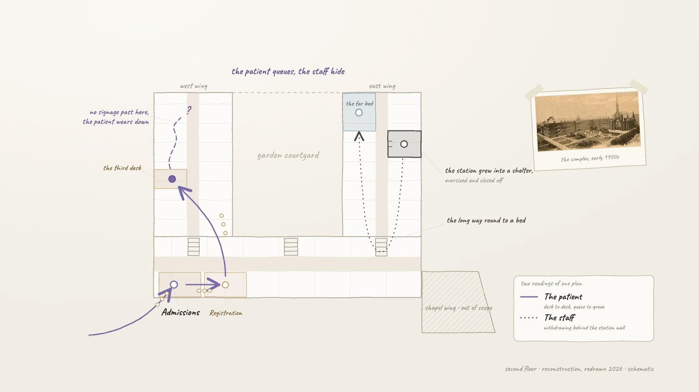
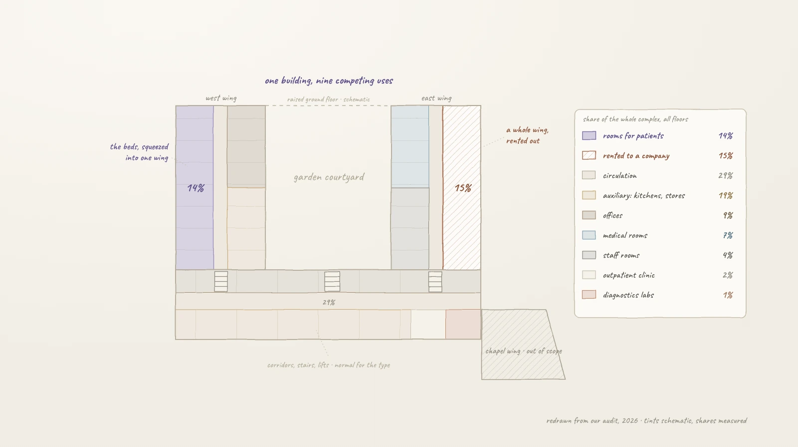
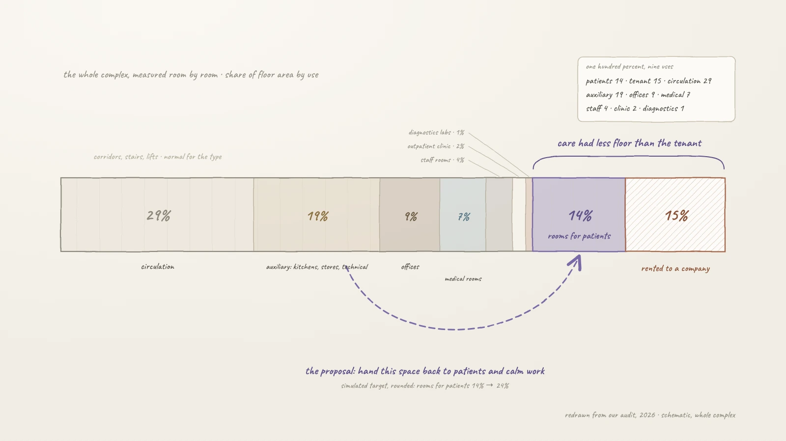
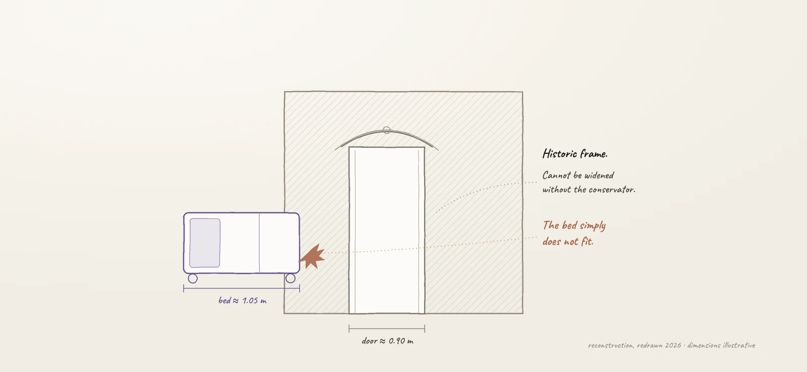
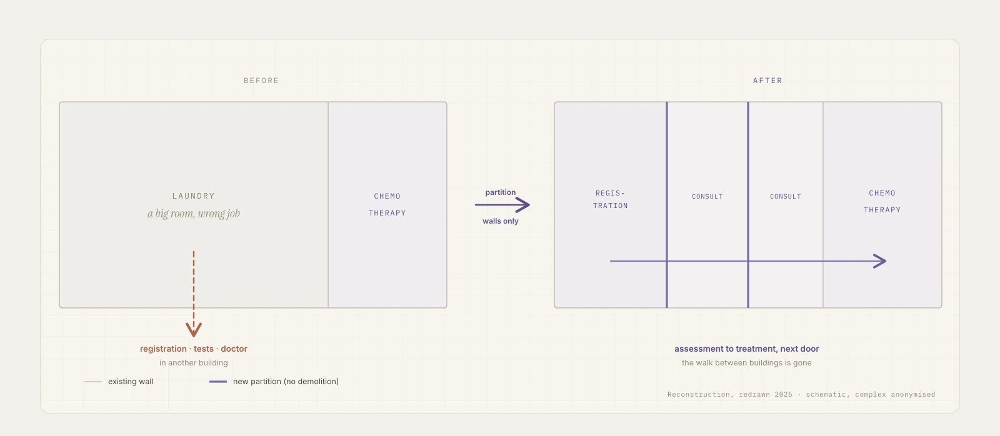
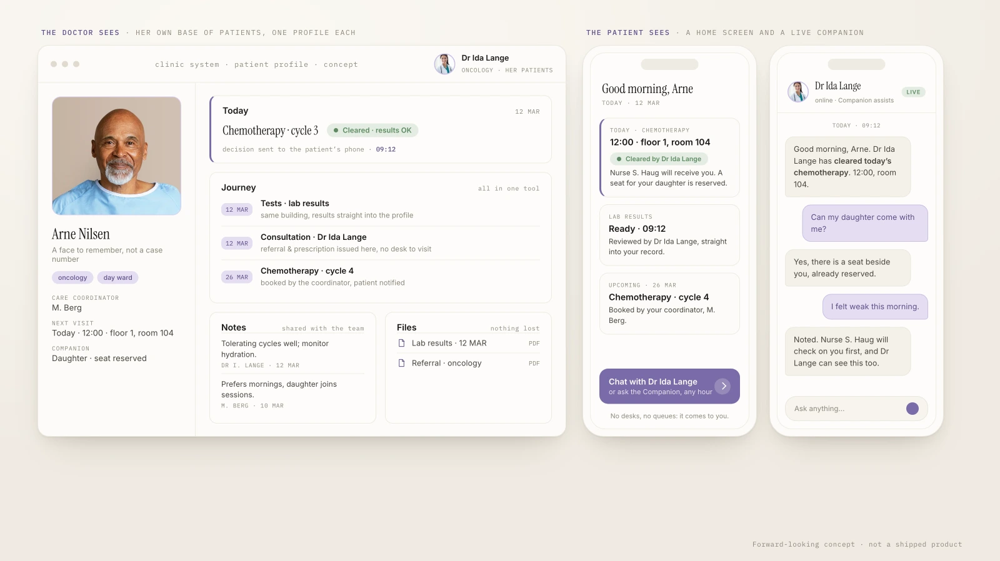

Before treatment could begin, the system sent patients on a paper chase
To start treatment, a patient first had to survive the paperwork. The journey we mapped ran through roughly five separate visits: a referral, a registration desk, a specialist issuing orders for tests, the tests themselves in a separate building, then back to the doctor for the results. Waiting for results took two to three weeks; waiting for the next appointment could take three to four months.
These were oncology patients, people in the hardest weeks of their lives. The complex asked them to walk to another building to collect a signature, return to a doctor for a confirmation, and only then go on to tests or therapy. Every failure of the system landed on the person least able to absorb it.

We spent three months inside the hospital before drawing a single line
The brief was an audit and optimisation of the hospital's space, and we treated it as service research rather than a drawing exercise. A mixed team, architects alongside HR and economics specialists, interviewed doctors, nurses and patients, observed wards and waiting areas at different hours, and walked every route the building forced on people.
We traced movement rather than floor area: patient journeys split by treatment, chemotherapy, radiotherapy and combined; staff routes by specialism; even the ambulance approach. Each layer showed where the service broke, and where it could be rejoined.

Patients had run out of patience. Staff had built themselves shelters.
A sick person has no reserves left. When an inefficient system asks them to queue at a third desk or walk one more corridor, they do not adapt, they wear down. In our interviews the frustration was constant, and it was aimed at the building as much as at anyone working in it.
The staff side read differently. Doctors and nurses who had worked for years next to suffering had learned, understandably, to protect themselves. Nurse stations had grown into small refuges, oversized and closed off, places to withdraw to. We read that as a signal rather than a fault: the same layout that exhausted patients was pushing the people caring for them into retreat. Any redesign would have to give both sides room, calm for patients and their families, and open, workable bases for staff who no longer needed to hide.

Patients held less of the hospital than a commercial tenant
The complex had grown for over a century, wing by wing, until the clear U-shaped plan it began with lay buried in extensions. The hospital's core complaint was that there was no room: chemotherapy chair to chair, crowded wards, no space for a family to sit with a patient. So we measured what the building actually did, room by room and floor by floor, and drew the first complete picture of how its area was used.
Circulation, the corridors, stairs and lifts, took 29% of the complex. For a historic hospital of this shape that is normal, and it was not the finding. The finding was the rest: rooms for patients came to 14% of the building, while 15% was rented out to an external company, 19% went to auxiliary rooms, kitchens, stores and technical space, and another 9% to offices. The lease itself was understandable: renting space out earned money the hospital needed to stay afloat. Which is exactly why outside funding mattered so much, as the way to hand that space back to patients instead of squeezing them to the limit. The hospital did have space. It just was not spending it on care.


We named the problems, and wrote down who was paying for each one
The audit's job was to make problems visible and precise, so they could be fixed, funded or challenged, not patched quietly one by one. A sample from the list:
- Registration was scattered across desks and buildings, so every stage of a visit began with finding the right queue
- Signage had grown ad hoc for decades, and much of it made no sense, pointing to functions that had moved years earlier
- Chemotherapy ran chair to chair, with no room for a relative to sit through treatment beside a patient
- Wards worked as through-corridors anyone could wander into, so rest and privacy depended on luck
- The historic fabric fought hospital logistics: protected door frames too narrow for a modern bed, in a listed building where walls could not simply be knocked through

Some interviews could not be repeated a week later
Part of the fieldwork ran through the palliative ward, where patients met their doctors and a support group at set hours. We would interview a patient about their week, their room, the distance to the bathroom. Sometimes, by the next visit, that person was gone.
We carried those conversations through the audit with particular care, because they were the clearest evidence of what the building owed the people inside it. Not efficiency for its own sake, but calm, the closeness of family, and days not spent walking corridors.
The audit became the hospital's case for change, and the first change was almost free
Our proposal reorganised the complex into functional zones that followed the building's original logic: bed wards in the wings, a medical core for surgery and treatment, and one public zone gathering admissions, the outpatient clinic and diagnostics. We then ran the new balance as a numbers simulation on the plans: auxiliary and technical space tightened, part of the lease given up, and the recovered floor turned into rooms for patients, including separate chemotherapy rooms with space for a family member to stay through treatment.
The measured, named list of problems did its work beyond the drawings too. On the strength of the audit, the hospital secured funding to renovate and improve conditions for its patients.
And one fix refused to wait. The hospital still ran its own laundry in a large room directly beside chemotherapy. We proposed moving the laundry out to an external provider and freeing the room for patients, and that is what happened: with partition walls alone it became the registration desk and consulting rooms next to treatment, the walk between buildings disappeared from the patient's day, and the hospital built it almost at once.

What the project showed, and where it could go next
A system should carry its own complexity, instead of quietly handing it to the people moving through it.
- Space is evidence. Measuring the building room by room turned complaints into numbers, and numbers into a funding case. That is what architectural training brings to service design: the ability to read, measure and prove what a space is actually doing
- The insight lives in the paths, not the plans. Watch the real service move across days, hours and user types before touching a single wall
- Some walls never move. In a protected monument you cannot do everything, and pretending otherwise wastes everyone's time. The work is to name what is fixed and redesign everything that is not: flows, functions, zones
- A hospital is a small city. Wings around a garden courtyard, an ambulance approach, a separate diagnostics building: the journeys crossed open space between buildings, so the thinking had to be urban as much as architectural
- The two disciplines need each other. Interviews and observation found what hurt; plans and measurement showed why; the redesign needed both. That is the seam where I work, between architecture and UX
Where this could go next: digitise the journey itself
If we ran this project today, the next step would be digital. The doctor keeps their own base of patients: one profile per person, with the photo large enough that a doctor remembers a face and not a case number, notes shared across the team, and referrals and prescriptions issued in the same tool.
The patient carries the same system in their pocket. A home screen says when today's chemotherapy is, that their named doctor has cleared it and which nurse will receive them; lab results arrive the moment they are ready. A live AI companion answers questions at any hour and stays alongside palliative patients through the hardest stretch. Every step that once meant a desk, a queue or a walk between buildings becomes a notification.

Nobody should cross a campus to collect what a notification can carry.